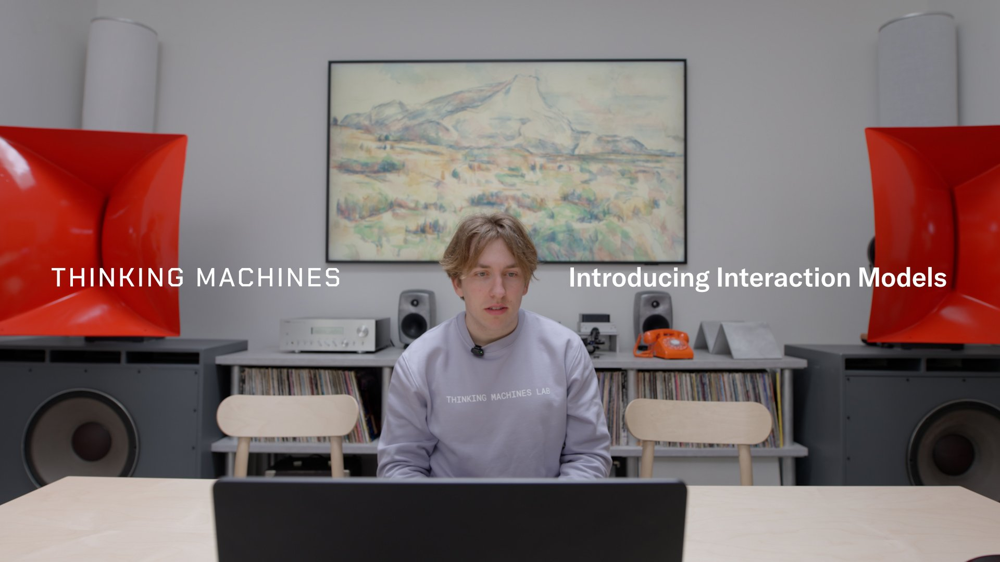
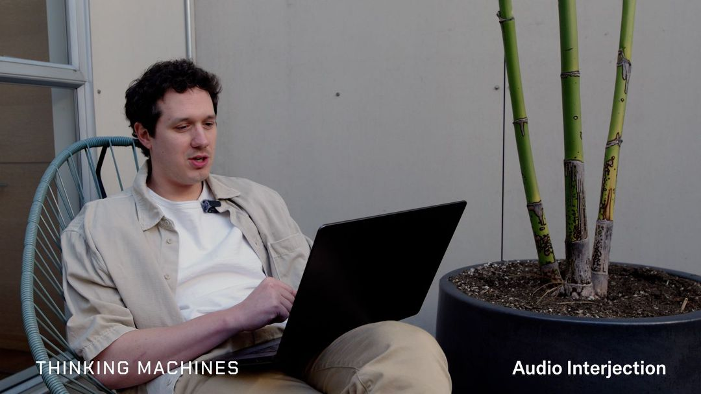
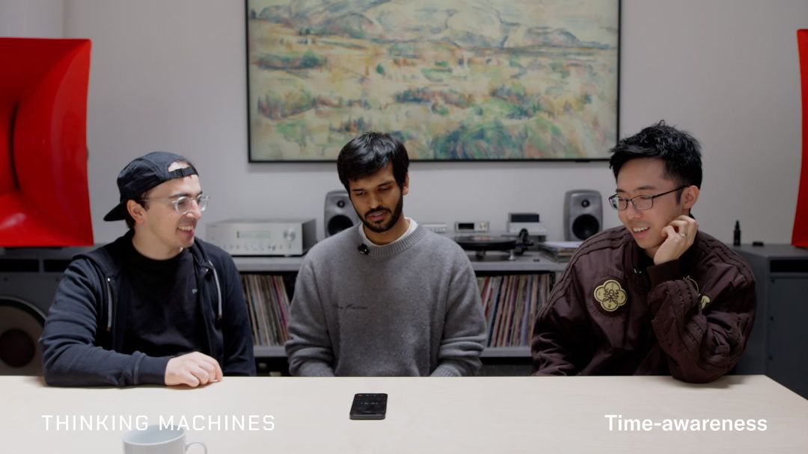
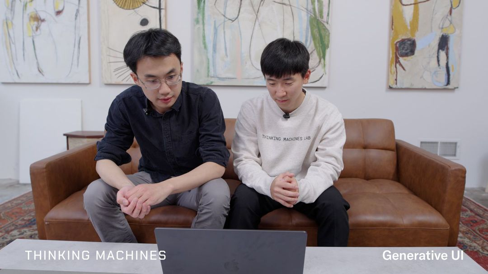

把实时协作做进模型本身
这篇校准件用一篇真实的技术解读（Thinking Machines Lab 的 Interaction Models）演示表达系统 v2：内容优先字号、单一阅读列、语义色彩三通道、概览媒体网格、深讲解、Mermaid 图与高亮代码——全部嵌同一份 component-styles.css。

.figure 占满阅读列。图 © Thinking Machines Lab。为什么回合制接不住协作
标准 LLM 的推理单位是一个完整 prompt：用户说完，系统才把整段送进模型做一次前向、再一次性吐出回答。在你输入的整个过程里，模型是"瞎"且"聋"的——它只在回合边界那一刻醒来。把交互"做出来"靠的是外面拼一圈脚手架（VAD 判断说没说完、对话管理器裁决该谁说话），但底层模型仍是回合制，于是交互能力被这层脚手架封顶——无论底层多聪明都不会改善。
与之相对的是全双工：像电话而非对讲机，两边可以同时说同时听。TML 的主张是把全双工、连续感知原生训进模型，让交互能力"随智力一同扩展"，而不是靠外部规则模拟。
一前台、一后台，两个模型共享上下文
拆分的理由是一个根本张力：实时性要模型够小够快，深推理要模型够大够慢。解法是把两件事交给两个模型——一个常驻的交互模型保持实时双向交换，一个异步的后台模型做更深的推理与工具调用；两者共享完整对话上下文，结果在合适时机流回对话。
真正让"实时"成立的是 200ms 微回合：把时间切成 200ms 小片，每片里既处理这段输入、又生成这段输出，输入流与输出流交错——没有"轮到谁"的硬边界，打断、附和、重叠说话就直接从连续读写里涌现。
无编码器早融合，为延迟重构表征
主流多模态是"晚融合 + 重编码器"——音频过独立 ASR、视频过独立视觉编码器，每个独立组件都是一次额外前向、都加串行延迟。早融合反过来：用极轻量预处理把各模态直接映射进主干 transformer，从头一起训练。在 200ms 预算里，你付不起"先跑完一个编码器再跑主模型"的串行账。
代价也真实：轻量嵌入意味着主干要自己扛起理解原始信号的负担，需要更大容量、更多训练，放弃成熟预训练编码器的先验——这是一笔"用规模和端到端训练换低延迟与原生融合"的赌注。确定性训练（批不变 kernel 让训练/采样 bitwise 对齐）则是做 RL + 实时推理绕不开的地基。
架构如何解锁这些能力
这些能力不是"又训练了一个技能"，而是架构的直接产物——脚手架式系统结构上就做不到。时间感知需要持续感知流逝的沉默；插话需要在输入未结束时就启动输出；并发工具调用需要后台模型分担。下面四张是官方 demo 截图——概览在此、机制在上文，删掉这组网格信息不丢。
对话管理
自然衔接发言、接管节奏

口头 / 视觉插话
输入未结束即可出声打断

时间感知
感知沉默与流逝的时间

并发工具调用
对话不停，后台异步干活
这些数字到底说明什么
0.40s 接话延迟落在人类自然对话区间（200–400ms）内，1.18s 已是"反应慢半拍"——体感真实。更有说服力的是 TimeSpeak / CueSpeak 这类"非零 vs 接近零"的对比：竞品接近零不是因为弱，而是结构上是回合制的，这些任务对它们无从下手。一个必须明说的折扣：多数基准是 TML 自建的 FD-bench，独立复现前应把领先幅度读作"一类新能力的存在性证明"。
| 指标（FD-bench） | TML-Interaction | Gemini-3.1-live | GPT-realtime-2.0 |
|---|---|---|---|
| 轮替延迟（越低越好） | 0.40s | 0.57s | 1.18s |
| 质量均分 v1.5 | 77.8 | 54.3 | 46.8 |
| TimeSpeak（时间感知） | 64.7% | — | 4.3% |
| CueSpeak（线索插话） | 81.7% | — | 2.9% |
一份研究预览，与该打的折扣
- 押注一个明确立场：实时人在环协作是原生建模问题，不是外部编排问题。
- 公开的只有
TML-Interaction-Small（276B MoE / 激活 12B）；"Small"本身就是信号——这是可行性验证，非最终形态。 - 诚实的开放问题：永远在线的全双工推理成本、真实嘈杂场景的泛化、以及自报基准的可信度。
component-styles.css 原文 + 一小段 doc-local glue（.prose / .takeaways / .diagram）。doctrine 决定结构，exemplar 校准手感；不要整体照抄结构。作者 API（代码经 §13 build 走 shiki 高亮）：
<!-- 色彩焦点：一屏一个，按语义取 -->
<h2>为什么<span class="grad" data-grad="tech">两个模型</span>共享上下文</h2>
<!-- 概览媒体网格：有真图才用，删掉信息不丢 -->
<div class="grid" data-cols="2">
<div class="capcard">
<img src="scene.jpg" alt="…">
<div class="b"><h3>能力</h3><p>一句话钩子</p></div>
</div>
</div>